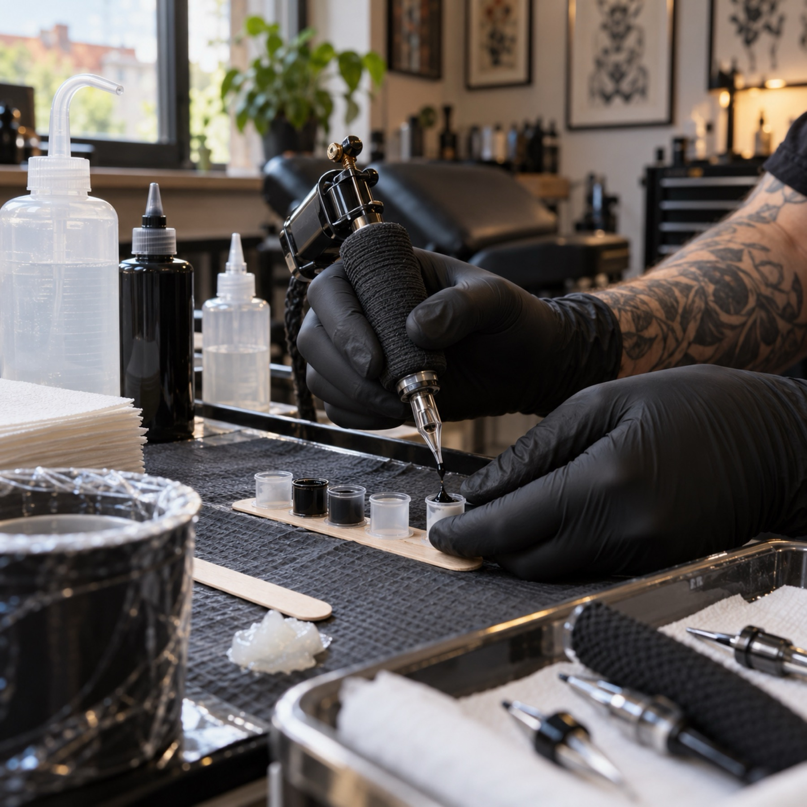
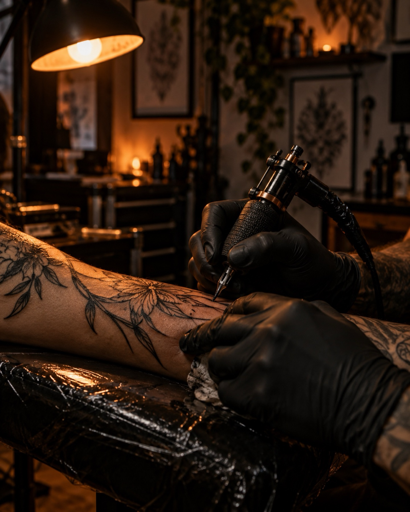
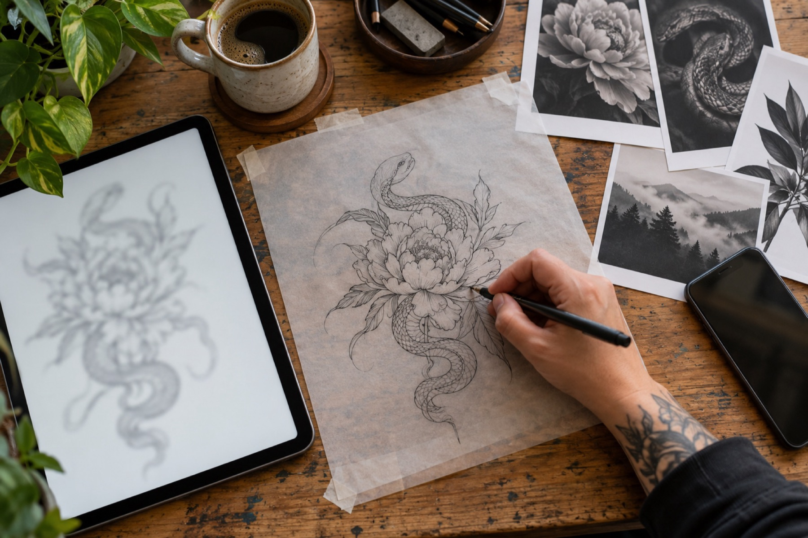
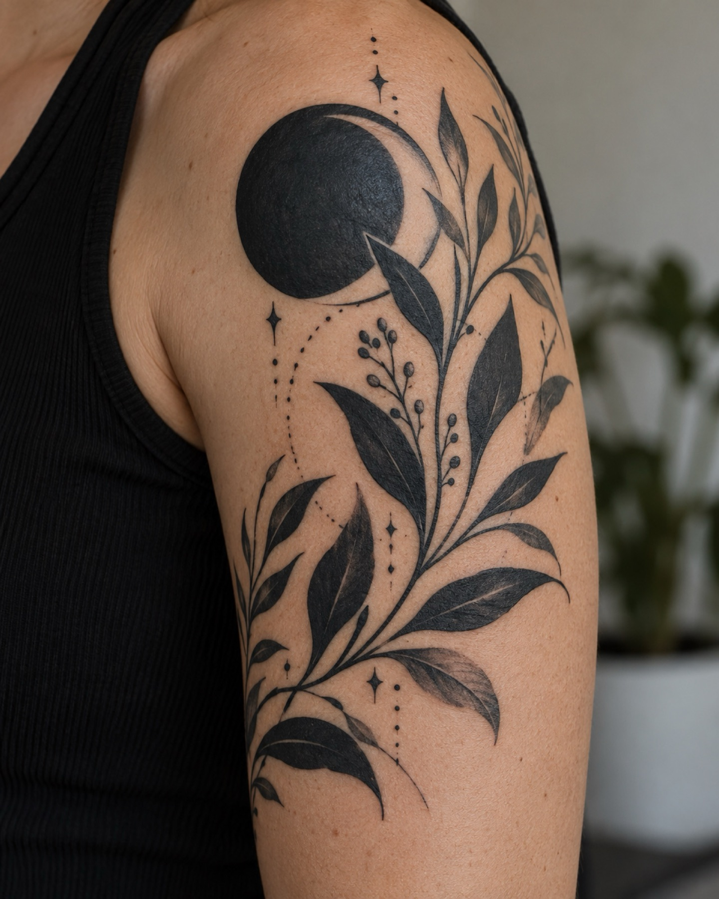
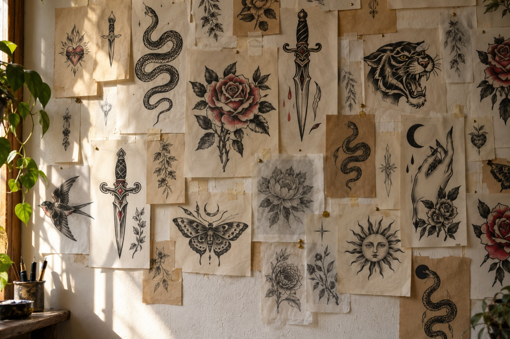
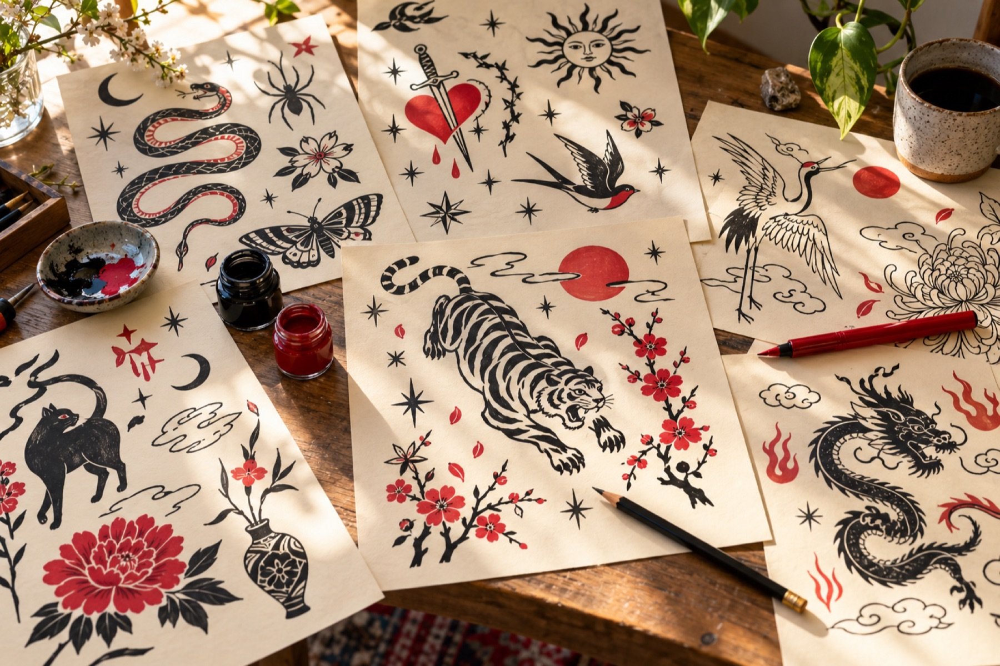

Seit 1992.
Immer noch 
Handarbeit.
Das älteste Tattoostudio Bielefelds – Blackwork, Flash und Wanna-Dos in der Neustädter Straße.
Motiv anfragen
Dreißig Jahre Nadel und Tusche
Artcore Tattoo versteht sich als das älteste Tattoostudio Bielefelds und arbeitet seit 1992 in der Stadt. Was sich über die Jahre gehalten hat: Jedes Motiv entsteht am Tisch, mit Stift, Papier und im Gespräch.
Bei uns steht das Handwerk vorne. Sauber gestochene Linien, kräftiges Schwarz und Motive, die auch in zwanzig Jahren noch zu Ihnen passen.

Blackwork, Flash, Wanna-Dos



Wer sticht
Im Studio arbeiten mehrere Artists mit eigener Handschrift. Wer was am liebsten macht, sehen Sie am schnellsten auf Instagram.
Blackwork
Kräftige Flächen, klare Konturen, Motive mit Wucht.
Flash
Fertig gezeichnete Motive, die Sie direkt auswählen können.
Eigene Entwürfe
Ihre Idee, gemeinsam skizziert und auf Ihre Körperstelle angepasst.
So läuft Ihre Anfrage
- 1
Idee schildern
Schreiben Sie uns, was Sie sich vorstellen – ein Satz genügt, gern mehr.
- 2
Stelle und Größe
Wohin soll das Motiv und wie groß ungefähr? So können wir ehrlich einschätzen.
- 3
Referenzen anhängen
Bilder, Skizzen oder Fotos, die Ihnen gefallen, helfen uns beim Entwurf.
- 4
Rückmeldung abwarten
Wir melden uns per Mail oder Telefon und vereinbaren den Termin.
Gut zu wissen
Wir erklären Ihnen die Pflege direkt nach dem Stechen und geben Ihnen die wichtigsten Punkte mit. Bei Fragen in den Wochen danach genügt eine Nachricht.
Die Terminvergabe läuft per Mail. Schreiben Sie uns über das Formular oder direkt an info@artcore-tattoo.net, per Instagram-Nachricht oder rufen Sie an.
Gern. Bringen Sie Skizzen oder Referenzen mit oder schicken Sie sie vorab. Wir passen das Motiv an Körperstelle und Größe an.
Ja, unsere Flash- und Wanna-Do-Motive sind fertig gezeichnet. Welche aktuell verfügbar sind, zeigen wir auf Instagram.
Kommen Sie vorbei
- AdresseArtcore Tattoo
Neustädter Str. 2B
33602 Bielefeld
Route in Google Maps öffnen - Telefon0521 7842053
- E-Mailinfo@artcore-tattoo.net
- Instagram@artcore_tattoo
Danke, wir melden uns.